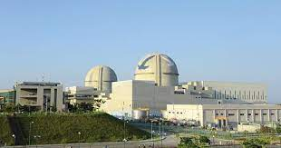

APR1400은 우리나라의 주력 원전 모델인 OPR1000을 개량하여 개발한 차세대형 원전입니다. 1992년 12월부터 2001년 12월까지 국가선도 기술개발과제(G-7)를 통해 개발되었습니다. 한국전력기술은 종합설계와 원자로계통설계의 기술개발을 담당하였습니다.
APR1400은 발전용량을 1000MW에서 1400MW로 키우고 계속운전 갱신기한을 40년에서 60년으로 늘린 최첨단 원전입니다. 원전 선진국들이 개발한 3세대 원전의 기술 수준을 뛰어넘는 강점을 두루 갖추었다는 평가를 받고 있습니다. 특히 안전성 측면에서 세계 최고 수준을 자랑합니다. 안전성 강화를 위해 APR1400은 표준설계를 포괄 부지 개념에 따라 암반 및 토양 조건에서 0.3g 내진요건을 모두 만족하도록 지진에 대한 대처 설계를 반영했습니다. 또한 보조건물의 4분면 배치 설계방식을 도입함으로써 화재, 홍수, 지진 등 외부 충격에 대한 대처 능력을 한 차원 강화하였습니다.
APR1400은 2006년 8월 신고리 3,4호기 원전건설에 첫 적용되었으며, 이후 신한울 1,2호기, 신고리 5,6호기, 신한울 3,4호기 등에 총 8기가 설계되고 있습니다. 특히 2009년 한국 원전의 최초 해외수출 모델로서 UAE BNPP 1~4호기에도 적용되어 건설중에 있습니다.
한편 APR1400의 UAE 수출 성공을 계기로 국제적 위상과 경쟁력을 한층 강화하기 위하여 한국전력기술은 한국전력, 한국수력원자력과 공동 협약을 체결하고 2017년 11월에 유럽사업자협회로부터 APR1400의 유럽 수출형인 EU-APR 표준설계의 유럽사업자요건(European Utility Requirements:EUR)인증을 받았습니다. 또한 2019년 8월에 미국 원자력규제위원회(Nuclear Regulatory Commission : NRC)로부터 설계인증(Design Certification : DC)을 취득하였습니다. 설계인증이란 특정 노형의 표준설계에 대해 규제기관으로부터 사전에 안전성을 인증받는 제도입니다. EU-APR의 유럽사업자요건 인증 및 APR1400의 미국 설계인증으로 미국, 폴란드, 이집트를 포함한 해외시장에서의 수출경쟁력을 제고하고, UAE 원전에 이은 추가적인 원전 수출도 이루어질 것을 기대합니다.
